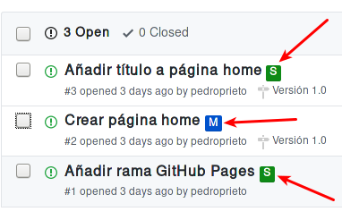

Metodologías para el trabajo con alumnos
Pedro Prieto
Ventajas de GitHub
- Los alumnos entran en contacto con metodologías de trabajo usadas en la industria
- Puesta en marcha sencilla
- Distribución de código base sobre el que trabajar
- Retroalimentación sobre el código
- Mayor comodidad a la hora de distribuir y recoger tareas
- Posibilidad de integrar metodologías de Desarrollo Guiado por Pruebas en las prácticas
- Servidor web integrado (GitHub Pages)
- Posibilidad de realizar despliegues automáticos de aplicaciones para su exposición y prueba
El programa GitHub Education
- GitHub Education
- Recursos para estudiantes:
- Herramientas: Student Developer Pack
- Certificación: GitHub Campus Experts
- Recursos para profesores:
- Gestión de clases: GitHub Classroom
- Comunidad: GitHub Education Community
- Certificación: GitHub Campus Advisors
- Bolsa de regalos (pegatinas, guías impresas, pósters,…)
GitHub Classroom
- Herramienta de gestión de trabajos
- Integrada con GitHub
- Automatiza la creación de repositorios privados para tareas individuales o de grupo
- Repositorio existente como base para la tarea
- Listado de alumnos (roster)
- Seguimiento
- Descarga de todos los trabajos mediante un click
Clases
- Se puede crear una clase (classroom) para cada clase que impartamos
- Cada clase va asociada a una organización de GitHub
- Se tiene que autorizar el acceso de cada clase a la organización de GitHub correspondiente
- En cada clase se pueden crear tareas (assignments)
- En cada clase se puede crear una lista de alumnos (roster) indicando una lista de identificadores
- Si se ha creado la lista de alumnos, el alumno tendrá que elegirse de la lista al aceptar la tarea
- El listado de alumnos permite asociar nombres de usuario de GitHub a datos conocidos (nombre, apellidos,…)
Tareas
- Privadas o públicas
- Individuales o de grupo
- Enlace de invitación
- Identificación del alumno al aceptar la tarea
- Repositorio para cada alumno (individual)
- Repositorio para cada grupo (grupo)
Metodologías de trabajo para prácticas individuales
1. Forks y Pull Requests
- Creación del repositorio con el código base de la tarea
- Archivo
READMEcon enunciado o descripción de la tarea - Cada alumno realiza un fork del repositorio
- El alumno trabaja en su copia del repositorio
- Cuando quiera solicitar ayuda o revisión del profesor, el alumno genera una pull request
- El profesor proporciona retroalimentación mediante comentarios en la pull request o en un determinado commit individual
- Cuando el alumno finaliza la tarea, genera una pull request
Ventajas
- Sencillez
- Flujo de trabajo parecido al funcionamiento normal de GitHub
Desventajas
- Los repositorios de las tareas de los alumnos son públicos
- Es difícil determinar el nombre del alumno a partir del usuario de GitHub
- Cada alumno es dueño de su repositorio
- En caso de tener integración con Travis, cada alumno deberá activarla en su repositorio
2. GitHub Classroom
- Creación del repositorio con el código base de la tarea
- Archivo
READMEcon enunciado o descripción de la tarea - En GitHub Classroom, se crea una tarea individual
- Se proporciona a los alumnos el enlace con la invitación
- Inicialmente, el alumno crea una rama nueva sobre la que va a trabajar
- Pull request a la rama principal del repositorio con cita al profesor para entrega / retroalimentación
- El profesor proporciona retroalimentación mediante comentarios en la pull request o en un determinado commit individual
Ventajas
- Sencillez
- Los alumnos no tienen acceso a los repositorios del resto de alumnos
- Existe un listado de alumnos para identificar cada tarea
- Los repositorios de cada alumno se crean en la cuenta de organización del profesor
- En caso de tener integración con Travis, el profesor puede activarla él mismo en cada repositorio
Desventajas
- Dado que no hay forks, no es posible hacer pull requests al repositorio principal. Por ello se sugiere el funcionamiento con ramas de trabajo
Metodologías de trabajo para prácticas en grupo
1. Organizaciones, equipos y repositorios compartidos
- Creación de equipos dentro de la organización
- Invitación de los alumnos para que formen parte de cada equipo
- Creación de un repositorio para cada equipo con el código base de la tarea
- Archivo
READMEcon enunciado o descripción de la tarea - Opcionalmente, configuración de los repositorios para su uso con Travis
- Asignación de los repositorios a los equipos correspondientes (recomendable permisos de escritura, write)
- Cada miembro del equipo crea una rama personal para su trabajo
- Las integraciones se realizan mediante pull requests a la rama principal del repositorio del equipo
- En las pull request se puede citar al profesor para su intervención
- El profesor proporciona retroalimentación mediante comentarios en la pull request o en un determinado commit individual
Ventajas
- Flujo de trabajo parecido al funcionamiento normal de GitHub
Desventajas
- La puesta en marcha implica varios pasos
- Es difícil determinar el nombre del alumno a partir del usuario de GitHub
- Es necesario crear un repositorio por cada equipo y subir el código común en todos
2. GitHub Classroom
- Creación del repositorio con el código base de la tarea
- Archivo
READMEcon enunciado o descripción de la tarea - En GitHub Classroom, se crea una tarea de grupo
- Se elige el repositorio con el código base sobre el que se basará la tarea
- Se proporciona a los alumnos el enlace con la invitación
- Cada alumno accede al enlace de invitación y crea un equipo nuevo o elige uno existente
- Se crea automáticamente un repositorio para cada equipo en la organización
- Opcionalmente, configuración de los repositorios creados para su uso con Travis
- Cada miembro del equipo crea una rama personal para su trabajo
- Las integraciones se realizan mediante pull requests a la rama principal del repositorio del equipo
- En las pull request se puede citar al profesor para su intervención
- El profesor proporciona retroalimentación mediante comentarios en la pull request o en un determinado commit individual
Ventajas
- Sencillez
- Existe un listado de alumnos para identificar cada tarea
Desventajas
- En caso de querer hacer los equipos el profesor, es necesario supervisar el proceso de asignación para que cada alumno se apunte al equipo que debe
Flujo de trabajo con Git para tareas en grupo
{kind=link}
Utilización con Scrum
Estrategias
- Organizaciones de GitHub
- Gestión de equipos
- Gestión de repositorios compartidos
- Utilización de ramas
- Ramas personales
- Rama principal de integración
Backlog / issues
- Creación de una milestone para hacer referencia a los objetivos del sprint
- Cada issue puede hacer referencia a una historia o una tarea
- Las historias que vayan a realizarse en el sprint (sprint backlog) se asignan a la milestone
- Pueden utilizarse las etiquetas para indicar la dificultad o duración (tallas de camiseta)
- Para indicar que una persona está trabajando en una tarea se asigna a dicha tarea
- Se pueden utilizar los proyectos como scrum board
Scrum Board / Proyectos

Estimación de tareas / etiquetas

Daily Scrum
- Cada día se realiza la reunión (entre 5 y 15 minutos)
- Cada persona indica qué tareas ha realizado y cierra los issues que tenga pendientes.
- Cada persona indica qué trabajo va a realizar hoy y se asigna los issues correspondientes
- Se evalúan los impedimentos que haya
Para mayor integración: ZenHub